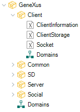
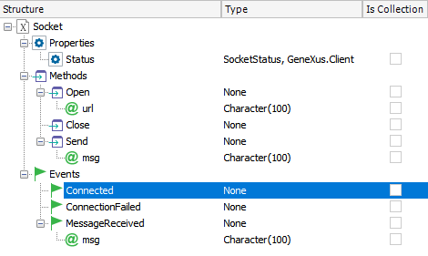
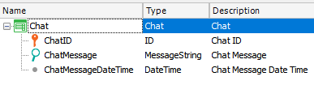
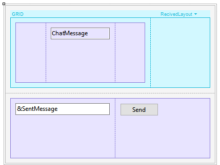
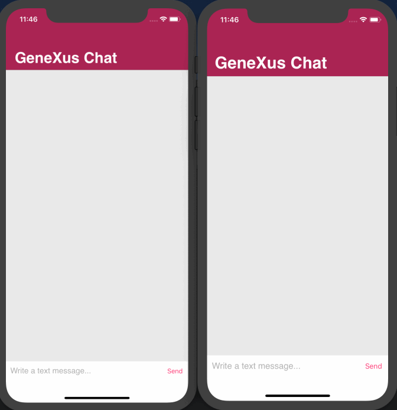

It allows establishing, from the client, a bidirectional connection with the WebSocket Server and thus exchanging data efficiently and in real time.
When using GeneXus to create your application and the server, GeneXus will automatically configure the Server connection via WebSocket, as well as manage the connections of client applications and disconnect from them. If the connection is lost or a problem arises, it will try to re-establish the connection. However, if the implementation requires it, the Open and Close methods will be used, which will allow establishing and closing connections with other WebSocket Servers not generated by GeneXus.
Its operation is similar to that of the external object Server.Socket external object, so the Send, Open, and Close events are listened to on the server side using the procedures configured under the properties node Web Notification configuration. For further reading, this article is recommended: HowTo: Receiving and processing a notification message from an external app.
|
 |
 |
Returns the value of the connection, Connected or Disconnected. Read-only.
Establishes a connection with the indicated server.
|
Return value |
None |
|
Parameters |
Url:Character() |
Closes the connection with the server you are connected to.
|
Return value |
None |
|
Parameters |
None |
Sends a message to the server you are connected to.
|
Return value |
None |
|
Parameters |
Msg:Character() |
Triggered after running the Open method, once the connection is correctly established.
|
Input |
None |
|
Output |
None |
ConnectionFailed event
Triggered after running the Close method, if the connection failed or was lost somehow.
|
Input |
None |
|
Output |
None |
MessageReceived
Triggered when a message is received. It's a data String received as a Json, which brings the DeviceID and the message sent.
|
Input |
None |
|
Output |
Msg:Character() |
Below is a brief example of a basic implementation of a chat via WebSocket, and lastly a finished implementation.
First, a transaction called Chat will be used to store the message content and the date on which it was sent.
Sample transaction:

Create a Panel for Smart Devices; add a Grid with an attribute that will show the message received; drag a variable of type VarChar(200) called SentMessage; add a button called Send, and in the event of this button type the code below:
Event 'Send'
GeneXus.Client.Socket.Send(&SentMessage)
Endevent
Sample layout:

Now, create a procedure called Sender with the following code:
&Chat = New() &Chat.ChatMessage = &NotificationInfo.message &Chat.ChatMessageDateTime = NOW() &Chat.Save() Commit &ServerSocket.Broadcast(&NotificationInfo)
With this code, you will add the new message to the DB. Next, you will make a broadcast to refresh the Grid view for all connected users, regardless of who sent the message.
Note: For more information on how to set up this procedure, read the document HowTo: Receiving and processing a notification message from an external app under the section Received Handler.
Lastly, in the events of the Panel for Smart Devices, you will create the event MessageReceived that will run a Refresh:
Event Client.Socket.MessageReceived(&Message) Refresh EndEvent
Example of a possible implementation:

Generators: Android, Apple, Java, .NET, .NET Core
| Backlinks | ||
| Client.Socket External Object (GeneXus 17 u6 and prior) | ||
| HowTo: Receiving and processing a notification message from an external app | Load balancing considerations | Category:Smart Devices API |